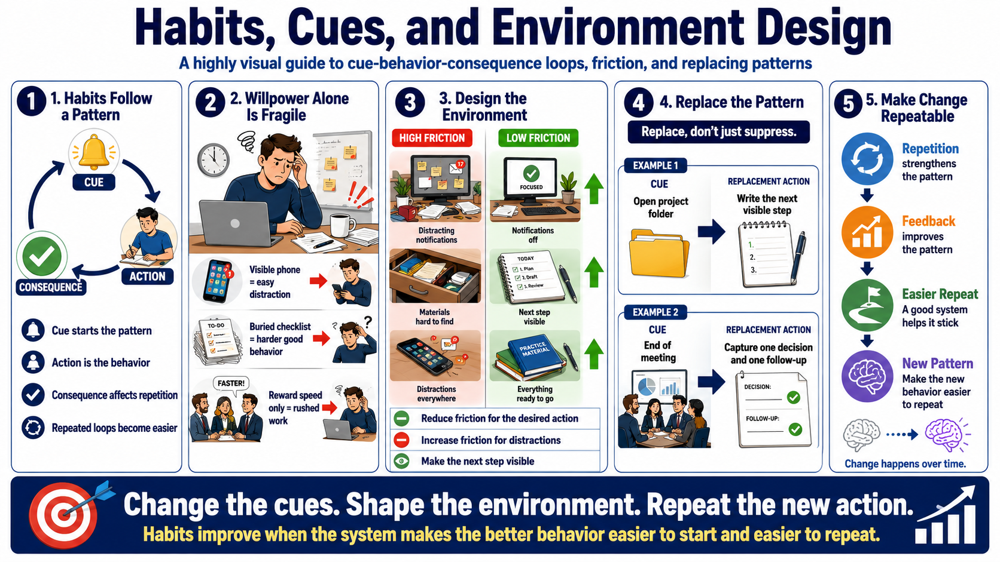

Habits, Routines, and Behavioral Patterns
Connecting to LMS... Progress: in progress

Narration
Habits are repeated behavior patterns supported by cues, actions, and consequences. A cue makes the behavior more likely to start. The action is the behavior itself. The consequence, whether obvious or subtle, influences whether the pattern is likely to repeat. Over time, repeated cue-behavior-consequence patterns can become easier to trigger and perform.
This is one reason relying only on willpower is fragile. A person may intend to behave differently, but the environment keeps triggering the old pattern. If the phone is visible, the distraction is one tap away. If the checklist is buried, the desired behavior takes extra effort. If the team rewards speed but not quality, rushed work may become the path of least resistance.
Environment design changes the pattern by changing friction. Reduce friction for desired behaviors and increase friction for distractions or unwanted patterns. Put the practice material where it is easy to start. Make the next step visible. Remove avoidable cues for behaviors that interrupt focus. Use routines that make the desired action more automatic, especially at the start of a session.
Replacing patterns is usually more practical than only suppressing them. Instead of saying, stop procrastinating, define the cue and the replacement action. When I open the project folder, I write the next visible step. When I finish a meeting, I capture one decision and one follow-up. Neuroplasticity supports habit change over time, but the change needs repetition, feedback, and a system that makes the new behavior easier to repeat.